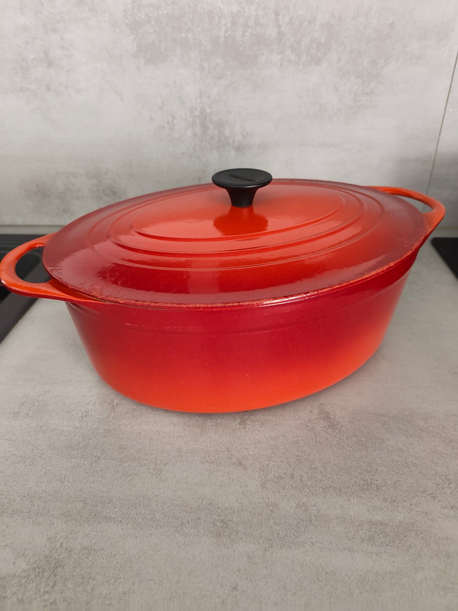

Collector’s Guide
European Enamelled Cast Iron Makers
Who made the cocottes collectors look for, where they worked, and how the makers connect
Enamelled cast iron is cast iron with a coating of enamel. In the twentieth century a handful of foundries in France, Belgium and the Netherlands made the pots, cocottes and casseroles that collectors look for today, and several of those names later came under the same owners. This guide introduces seven makers. Every statement comes from a source listed at the end, and where the record is thin we say so rather than fill the gap.

How the Makers Connect
Le Creuset and Cousances belong together. Le Creuset says it bought the Cousances brand and foundry in 1957, and a French court ruling of 1990 describes Cousances as a subsidiary of the Le Creuset group by the 1980s. Le Creuset still sells a range under the Cousances name.
Staub and Fontignac share a foundry. Fontignac was a cookware brand of the Fonderies Franco-Belges at Merville, in the Nord; in 2002 Staub took over that cookware business together with the foundry, where Staub cocottes are now cast. The German Zwilling J.A. Henckels group took over Staub in 2008.
We found no documented link between Invicta or DRU and the other makers in this guide. Similar shapes and colours are common in enamelled cast iron and do not, on their own, show that two makers were connected.
France
Le Creuset
Le Creuset was founded in 1925 at Fresnoy-le-Grand, in the Aisne, by two Belgians: Armand Desaegher, a casting specialist, and Octave Aubecq, an enameller. Its signature colour is an orange enamel, known as Volcanique in France and Flame in English-speaking markets, and Le Creuset still casts its cookware at Fresnoy-le-Grand.
Its history, designers and dating have their own guides: Vintage Le Creuset · How to date vintage Le Creuset
France
Cousances
Cousances takes its name from its foundry village, Cousances-les-Forges in the Meuse, in eastern France, where the company traded as Haut Fourneau et Fonderies de Cousances. It traces its foundry back to the sixteenth century: a company catalogue states that the works were founded in 1553, a date Le Creuset repeats.
Le Creuset says it bought Cousances in 1957, and a 1990 court ruling shows that the company was a subsidiary of the Le Creuset group in the 1980s. The Cousances name now lives on in a Le Creuset range that revives designs the two makers shared.
France
Staub
Staub was founded in 1974 by Francis Staub at Turckheim, next to Colmar in Alsace. Its first cocottes appeared in the second half of the 1970s: Zwilling dates the first design to 1974, while the magazine YAM places the first cocottes in 1978. Staub is known for its “cocottes à picots”: enamelled cocottes whose lids carry small spikes, the picots.
Staub grew by buying an enamelling works in the Loire in 1988 and a foundry in 2002, and its cast iron is now made at Merville, in the Nord. The Zwilling J.A. Henckels group took the company over in 2008.
France
Invicta
Invicta was founded in 1924 at Donchery, in the Meuse valley in the Ardennes; the foundry is now in the neighbouring village of Vivier-au-Court and the enamelling works remain at Donchery. According to the company, it began by casting washbasins and sanitary ware, and over the twentieth century added cast iron furniture, trivets, cocottes and other kitchenware.
Today Invicta is best known for wood stoves and fireplaces, and it still makes cast iron cocottes and barbecues. Long run by the Dupire family, it came under the majority control of the investment fund Qualium Investissement in 2013.
France
Fontignac
Fontignac was a cookware brand of the Fonderies Franco-Belges at Merville, in the Nord, a company founded in 1926 as a stove maker. In 2002 Staub took over its cookware business, sold under the Fontignac and Ménastyl names, together with the foundry, which now casts Staub cocottes.
Zwilling listed Fontignac among its kitchen brands in 2017. When the Fontignac name was first used is not documented in any source we found, and dates given for it online are not reliable.
Belgium
Descoware
Descoware was Belgian-made enamelled cast iron sold in the United States. According to the most detailed history available, it was first imported as “Bruxelles Ware” and took the Descoware name in the early 1950s from its American importer, the D.E. Sanford Company. It is remembered for its “Flame” gradient from red to orange and for a grey interior enamel called Glissemaille.
Descoware’s history rests largely on that single published account, which also says that production later moved to Japan. We therefore give no foundry or dates beyond this outline.
The Netherlands
DRU
DRU began in 1754 as an iron works at Ulft, in Gelderland in the east of the Netherlands. Its name stands for Diepenbrock and Reigers, Ulft: the Diepenbrock and Reigers families, from Bocholt just across the German border, leased the works from 1774 and later owned it. DRU became known for enamelled kitchenware, notably in an orange-red enamel, as well as bathtubs and stoves.
The designer Wim Gilles worked for DRU from 1949 to 1953; his enamelled steel kettle, made by DRU in 1954, is in the Victoria and Albert Museum. Casting at Ulft stopped in 1973 and enamelling in 1982. The company continues as DRU Fire, making stoves at Duiven, and the old works at Ulft are now a protected heritage site.
How This Guide Was Researched
Every statement on this page comes from a source listed below that we have read: court and heritage records, period press, museum records, company histories and national and regional press. Marketplace listings, auction descriptions and forum posts are not used as sources. Where good sources disagree we say so, and where the record is thin, as it is for Descoware and the early history of Fontignac, we leave the gap open.
See the pieces we have documented in the Cook & Collect archive.
Browse vintage enamelled cast iron in the Cook & Collect collection.
Research & References
The references are ordered by evidential weight: court, heritage and period records first, then museum records, the makers’ own histories, press articles, and finally a collector’s account used only where nothing better exists.
- Court, heritage and period records
-
- Cour de cassation, chambre sociale, ruling of 27 June 1990, no. 87-44.143.
Names the Haut Fourneau et Fonderies de Cousances, based at Cousances-les-Forges (Meuse), as a subsidiary of the Le Creuset group. Légifrance - Rijksmonumentenregister — DRU, building A, enamelling works with water tower, Ulft.
Dutch national heritage record; dates the end of enamelling at Ulft to 1982 and records the founding year 1754 on the tower. rijksmonumenten.nl - NRC, 12 July 1954 — “DRU bestaat 200 jaar”.
Period press account of DRU’s founding in 1754, the Diepenbrock and Reigers lease of 1774 and the products of the 1950s. NRC - Haut-fourneau et Fonderies de Cousances — catalogue and trade material, reproduced by industrie.lu.
Includes the legend “Usine fondée en 1553”. industrie.lu
- Cour de cassation, chambre sociale, ruling of 27 June 1990, no. 87-44.143.
- Museum records
-
- Victoria and Albert Museum — Kettle, Willem Gilles, designed 1953, made by DRU 1954, W.27:1, 2-2009.
Records Gilles’s work for DRU from 1949 to 1953. View museum record
- Victoria and Albert Museum — Kettle, Willem Gilles, designed 1953, made by DRU 1954, W.27:1, 2-2009.
- The makers’ own histories
- Company sources, read alongside independent records where these exist.
- Le Creuset (US) — Cousances skillet page, on the purchase of Cousances in 1957 (archived copy)
- Zwilling — Staub, made in France
- Zwilling — company history (acquisition of Staub, 2008)
- Zwilling J.A. Henckels — fact sheet listing its kitchen brands, including Fontignac (PDF)
- Invicta Group — Notre histoire
- Franco Belge — company history (founded 1926; Staub group 2002–2014)
- DRU Industriepark — history of DRU
- DRU Fire — company history
- Press
-
- The Brussels Times — Le Creuset marks a century of colour, craft and Belgian genius (2025)
- The Independent — The secret history of Le Creuset (2010)
- Les Echos — Les Fonderies Franco-Belges devraient être bientôt cédées (2002)
- Les Echos — Les cocottes Staub vont devenir allemandes (2008)
- YAM — Staub, les cocottes cultes
- Dernières Nouvelles d’Alsace — Les cocottes Staub fêtent leur demi-siècle (2024)
- Le Journal des Entreprises — Staub recentre sa production dans le Nord
- France 3 — Loire : dernier jour de travail chez Staub
- Bioénergie Promotion — Reprise du fabricant de poêles à bois Invicta (2013)
- Industriewerk — DRU, Ulft (industrial heritage)
- Collector’s account
- History of Descoware (descoware.com) — a reprint of an earlier article; the only detailed account we found, used here with that caution.